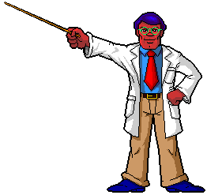
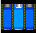

The ship’s field guide
Professor Stubble’s notes from the field.

Know your tools. Know your spores.
Do not confuse the two.
Our ship contains a remarkable assortment of scientific equipment. Some of it even works. Here are the essentials for today’s expedition, with my professional recommendation that you stand well clear of anything about to explode.
The red exit
Your destination on each deck. Sometimes getting there takes a little more thought than walking to the right.

Trance Porters
Stand inside and press Up. Matching link numbers connect destinations. In this demo, Conundrum’s three-way links cycle through their endpoints.
Gates, switches & cards
Walk past a linked switch to open its gate. A key slot needs the matching card color; its link chooses the gate. Explore before spending your ammo.
Mama Spores
Ten weed-killer hits bring down a Mama. Keep your distance and mind the little spores. A bomb can also settle the argument.
Helium & supplies
Collect helium, select it with Shift and use it with Enter to float upward. Space brings you down. Oxygen restores full health; health shakes and weed-killer packs replenish supplies.
Hydrogen & nitrogen
Select a bomb and press Enter, then get clear. Soft scenery can be destroyed; reinforced walls stay put. Later decks use these tools as part of the puzzle.
Baby Spores
Crouch to line up a shot with these little intruders. One pellet is enough; just don’t mistake small for harmless.
Bat Spores
A weed-killer hit makes a bat rest, briefly turning it into a platform. A bomb finishes the job. Sometimes your enemy is also your ride.
First aid
The old site calls this a first-aid kit; the demo calls the inventory supply Oxygen. Select it and press Enter to restore full health.